Galerija
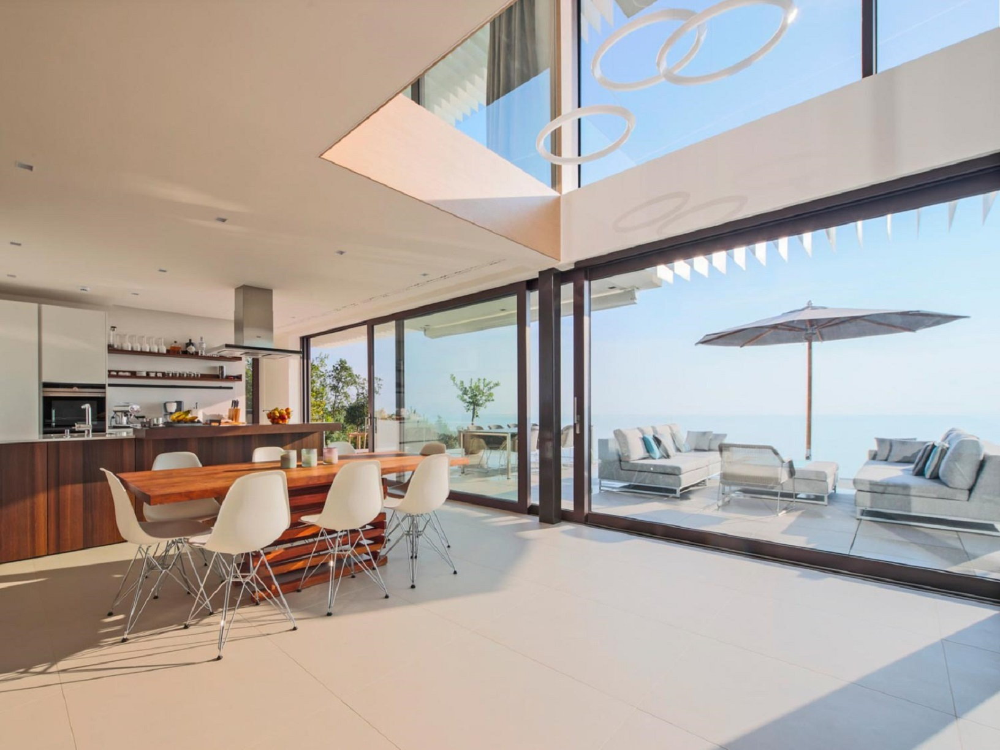
Podizno klizna stijena Wicona Wicslide 160
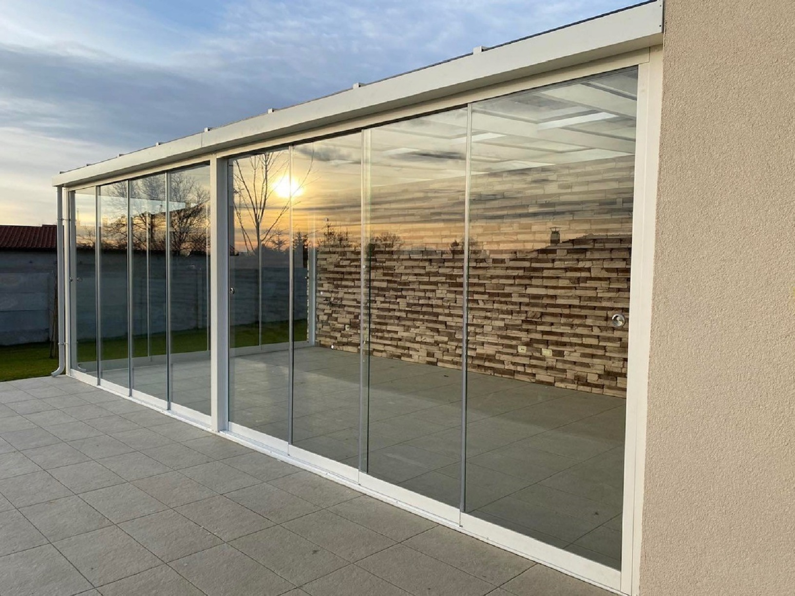
Panoramsko staklena klizna stijena
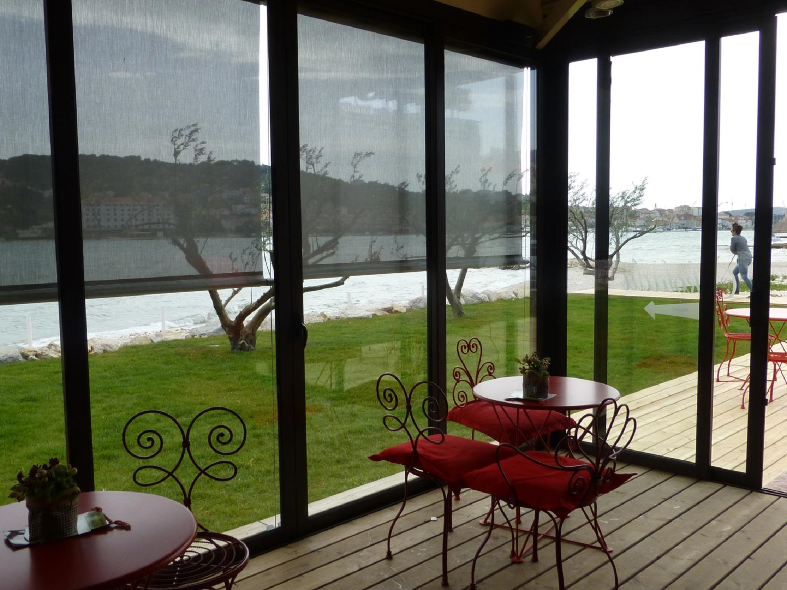
Paralelno klizne stijene PE SLIDE 70 TT / PE SLIDE 70
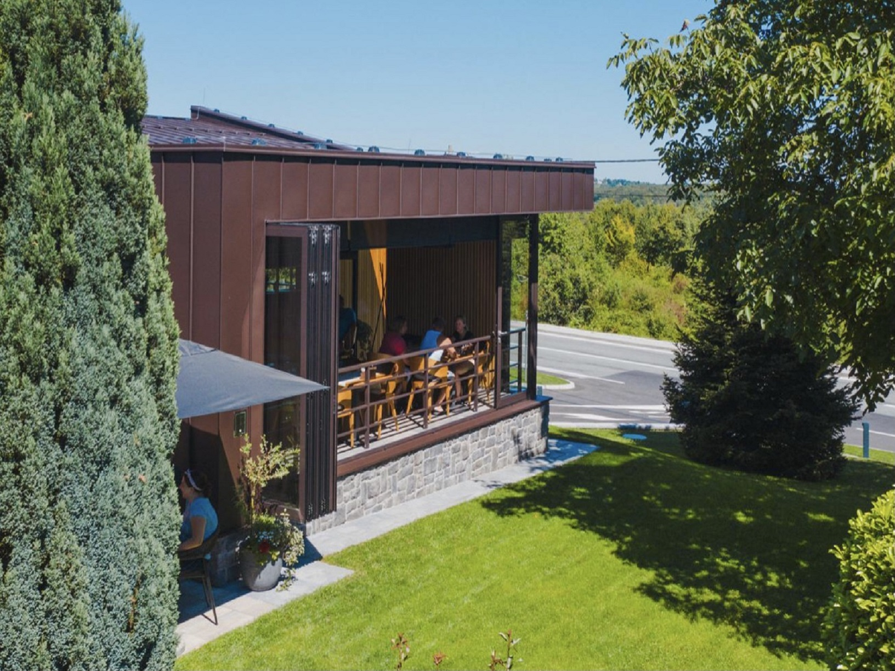
Harmo stijene Wicona Wicslide 75FD
 Alu nadstrešnica
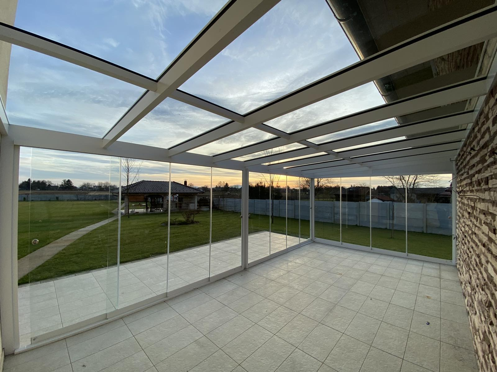
Zimski vrt sa panoramskim staklenim kliznim stijenama
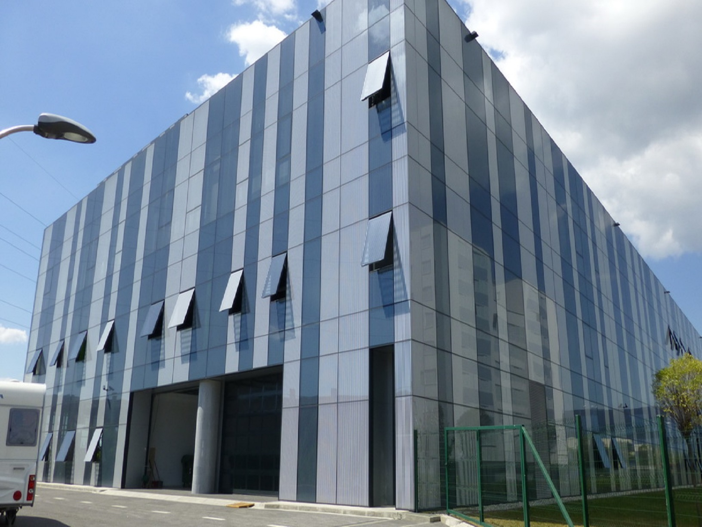
Strukturalna staklena fasada Zagreb
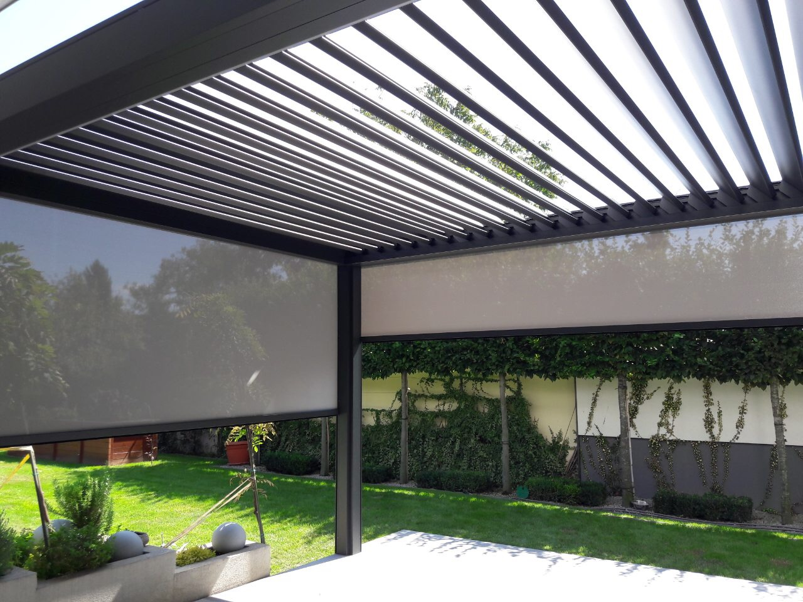
Pergola
Alu nadstrešnica
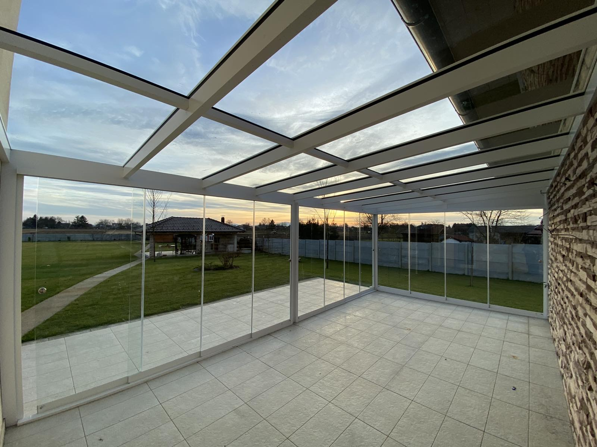
Zimski vrt sa panoramskim staklenim kliznim stijenama
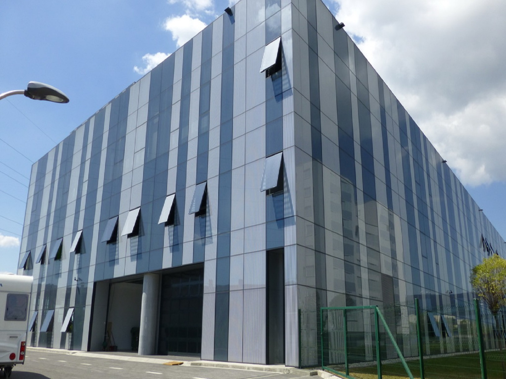
Strukturalna staklena fasada Zagreb
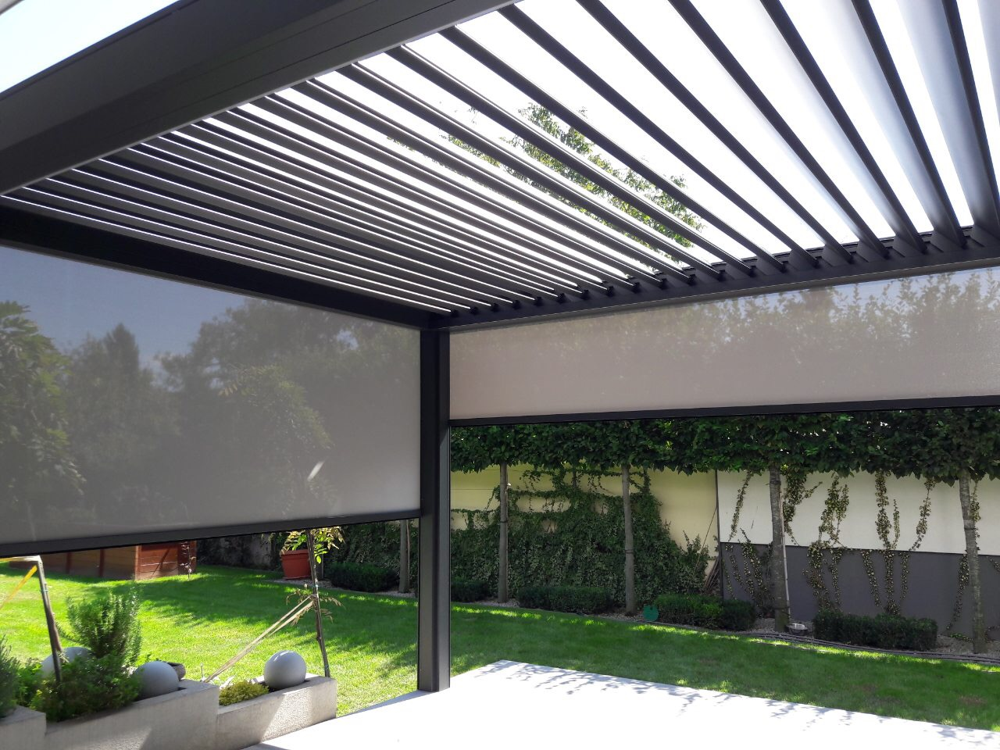
Pergola
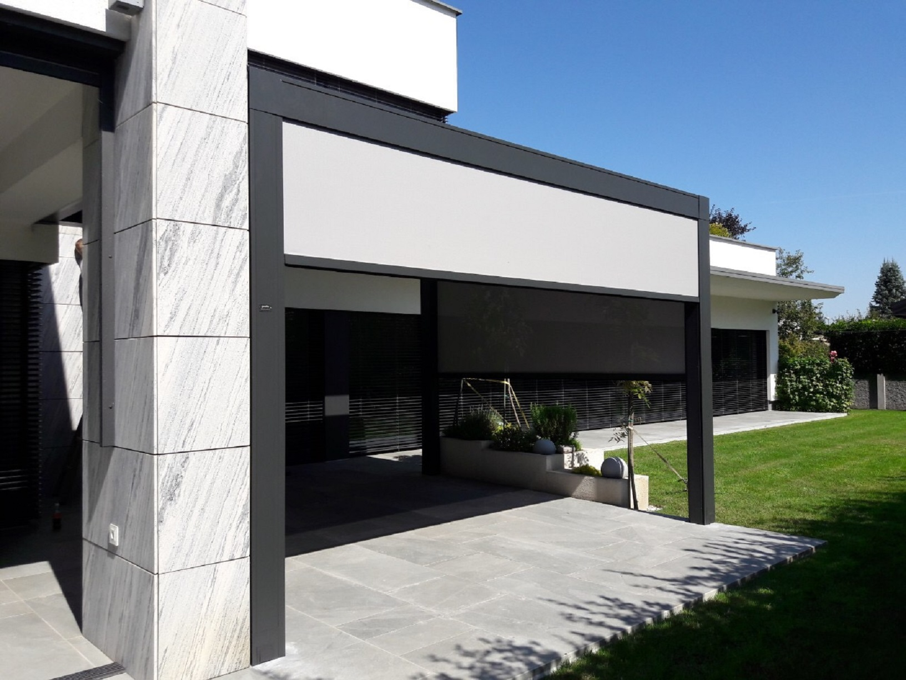
Screen rolo
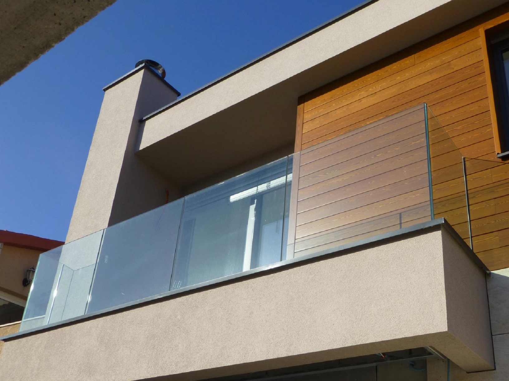
Staklene ograde za stubišta, galerije i balkone